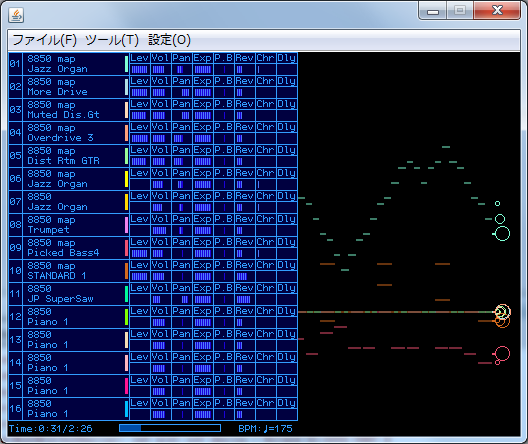

デフォルトレンダラー - version 0.1.x
Author
rz
Web

目次
概要
プレーヤー同梱のデフォルトレンダラーです。
各 MIDI チャンネルの情報、およびピアノロールのレンダリングを行います。
ピアノロールの色を変えたい場合
以下の場所に設定ファイルを置いていますので、テキストエディタで編集することで変更可能です。
<MIDIPlayerの場所>/data/plugin/renderer/DefaultRenderer/
config.xml
書式
<color midich = "?" color = "#??????" />
midich: 対象となる MIDI ch (0〜15)
color: 色。 html 同様に #RRGGBB 形式が使用できます。
謝辞
- TMIDI Player
再生画面の参考にさせて頂いています。
履歴